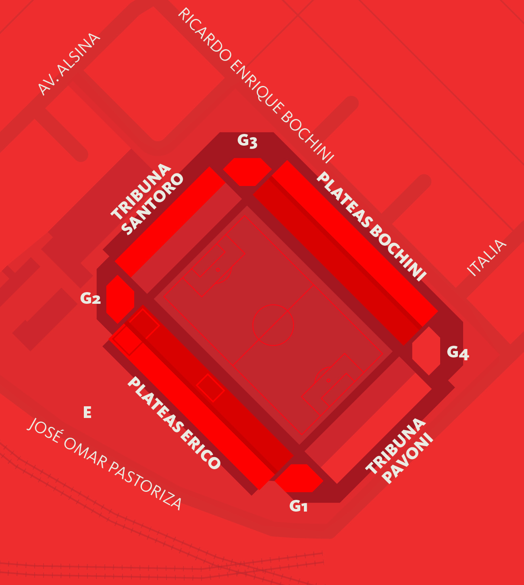
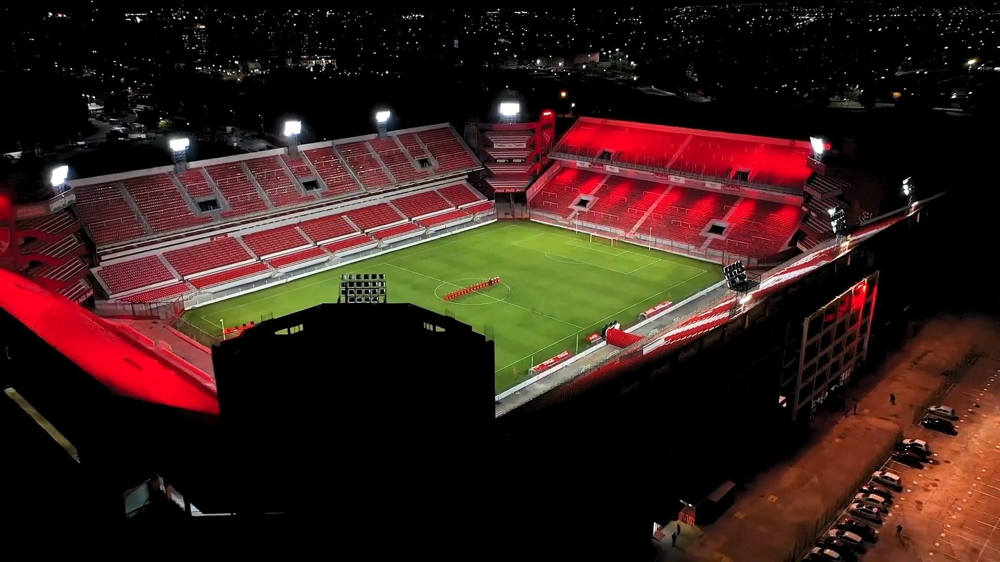
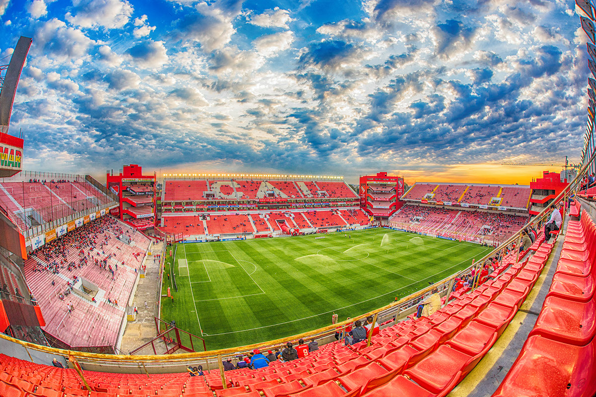

El estadio debe su nombre a las siete Copas Libertadores de América ganadas por Independiente, y está inspirado en el clásico estilo inglés compuesto por 4 tribunas dobles y rodeadas en sus esquinas por estructuras denominadas "Gargantas del Diablo", las cuales albergan plateas preferenciales. El Estadio Libertadores de América costó inicialmente alrededor de 50 millones de dólares, que fueron solventados inicialmente con las ventas de Sergio Agüero y el arquero Oscar Ustari. Luego se hizo saber que el pase del delantero Germán Denis al SSC Napoli por $8 millones de dólares se destinó también a las obras del estadio.
Tuvo una inauguración simbólica el 25 de noviembre de 2008, previo a las elecciones del club.4 El 28 de octubre de 2009 fue reinaugurado oficialmente en el encuentro entre Independiente y Colón de Santa Fe, con un gol de Andrés Silvera, siendo este el primer jugador en marcar un gol en este estadio. Para este partido hubo una recaudación aproximada de $900.000 de pesos argentinos. Si bien comenzó a utilizarse, el estadio no se encontraba completo, sino que se jugó faltando terminar buena parte del mismo.

El 8 de diciembre de 2010, el estadio albergó por primera vez una final de un torneo oficial, cuando Independiente recibió al Goiás de Brasil por la final de la Copa Sudamericana 2010. El encuentro lo ganó Independiente por 3-1, sumando su primer título en su nuevo estadio. En febrero de 2011 albergó por primera vez un encuentro correspondiente a la Copa Libertadores de América, cuando Independiente derrotó 2-0 al Deportivo Quito por la primera fase de la Copa Libertadores 2011.
Entre los años 2013 y 2014, años en los que Independiente atravesó una fuerte crisis institucional y económica, y que derivó en el primer descenso del club a la Primera B Nacional (que se consumó con una derrota ante San Lorenzo en este estadio), las obras que faltaban completar en el estadio estaban paralizadas, llegando a estar considerado el estadio bajo un estado severo de abandono.

En marzo de 2014, bajo la reciente presidencia de Hugo Moyano, fue habilitada la platea Bochini Alta sur con capacidad para 1.785 personas. El 30 de agosto de 2014 se habilitaron las 2.507 ubicaciones de la Bochini Alta norte para el Clásico de Avellaneda de ese año, llegando el estadio a la capacidad de 48,069 localidades. El 18 de diciembre de 2016, en un encuentro frente a Banfield, fue inaugurada la platea Bochini Baja y la última garganta restante, la número 3, llegando a 52.364 de capacidad.
El 24 de octubre de 2020, se renombraron dos cabeceras: la Tribuna Sur pasó a llamarse Ricardo Elbio Pavoni; y, la Tribuna Norte, Miguel Ángel Santoro.910 Poco después, en el partido entre Independiente y San Lorenzo, el recinto fue renombrado como Estadio Libertadores de América-Ricardo Enrique Bochini, en homenaje al máximo ídolo de la institución.

En 2021 el estadio fue elegido para acoger la final del torneo de la Primera B 2020 entre Tristán Suárez y San Telmo. El encuentro lo ganó Tristán Suárez por 1-0, logrando por primera vez el ascenso a la Primera B Nacional.
El 17 de septiembre de 2022 el estadio albergó por primera vez un partido oficial entre dos selecciones nacionales, cuando la selección de rugby de Argentina ("Los Pumas") recibieron a la selección de rugby de Sudáfrica ("Springboks") por la quinta y penúltima fecha del The Rugby Championship 2022. El encuentro lo ganaron los sudafricanos por 36-20.14